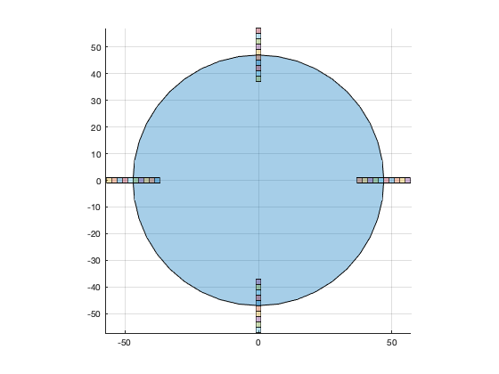
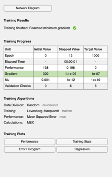
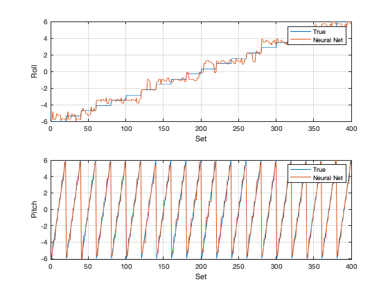
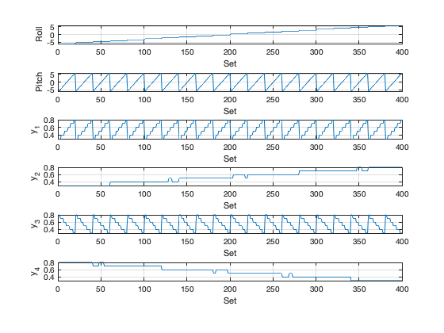

Contents
Demonstrate LEO static segmented Earth Sensor using a neural network.
The neural network is trained using known roll and pitch.
degToRad = pi/180; rE = 6378.14; jD0 = 2459855.22759992; el = [6796.09601357439 0.901411020464568 2.85901984679868... 1.64265231211276 0.000612135990692413 -0.986951254735983]; d = SegmentedEarthSensor; [r,v,t] = RVFromKepler(el); rMean = mean(vecnorm(r)); qECIToLVLH = QLVLH(r,v); n = 20; roll = linspace(-6,6,n); pitch = linspace(-6,6,n); i = 1; y = zeros(40,n*n); x = zeros(2,n*n); SegmentedEarthSensor(qECIToLVLH(:,1),r(:,1),d) for j = 1:n for k = 1:n rJ = roll(j); pK = pitch(k); mRoll = [1 0 0;0 cosd(rJ) -sind(rJ);0 sind(rJ) cosd(rJ)]; mPitch = [cosd(pK) 0 -sind(pK);0 1 0;sind(pK) 0 cosd(pK)]; qLVLHToBody = Mat2Q(mRoll*mPitch); qECIToBody = QMult(qECIToLVLH(:,1),qLVLHToBody); y(:,i) = SegmentedEarthSensor(qECIToBody,r(:,1),d); x(:,i) = [roll(j);pitch(k)]; i = i + 1; end end % Neural net training data net = feedforwardnet(20); net = configure( net, y, x ); net.layers{1}.transferFcn = 'poslin'; % purelin net.name = 'Earth Sensor'; net = train(net,y,x);
ans =
Figure (1: Earth Sensor) with properties:
Number: 1
Name: 'Earth Sensor'
Color: [0.94 0.94 0.94]
Position: [560 528 560 420]
Units: 'pixels'
Use GET to show all properties
ans =
Columns 1 through 6
0 7.3432 14.506 21.311 27.591 33.192
Columns 7 through 12
37.976 41.825 44.644 46.363 46.941 46.363
Columns 13 through 18
44.644 41.825 37.976 33.192 27.591 21.311
Columns 19 through 24
14.506 7.3432 5.7486e-15 -7.3432 -14.506 -21.311
Columns 25 through 30
-27.591 -33.192 -37.976 -41.825 -44.644 -46.363
Columns 31 through 36
-46.941 -46.363 -44.644 -41.825 -37.976 -33.192
Columns 37 through 40
-27.591 -21.311 -14.506 -7.3432
  Test
c = sim(net,y);
leg = {'True' 'Neural Net'};
PlotSet(1:size(c,2),[x;c],'x label','Set',...
'y label',{'Roll' 'Pitch'},'figure title','Neural Network',...
'plot set',{[1 3],[2 4]},'legend',{leg leg});
yS = zeros(4,size(y,2));
for k = 1:4
j = 10*k-9:10*k;
yS(k,:) = mean(y(j,:));
end
yL = {'Roll' 'Pitch' 'y_1' 'y_2' 'y_3' 'y_4'};
PlotSet(1:size(c,2),[x;yS],'x label','Set','y label',yL,...
'figure title','Neural Network Data')
ans =
Figure (3: Neural Network Data) with properties:
Number: 3
Name: 'Neural Network Data'
Color: [0.94 0.94 0.94]
Position: [560 528 560 420]
Units: 'pixels'
Use GET to show all properties
  Copyright
Copyright (c) 2019 Princeton Satellite Systems, Inc. All rights reserved.